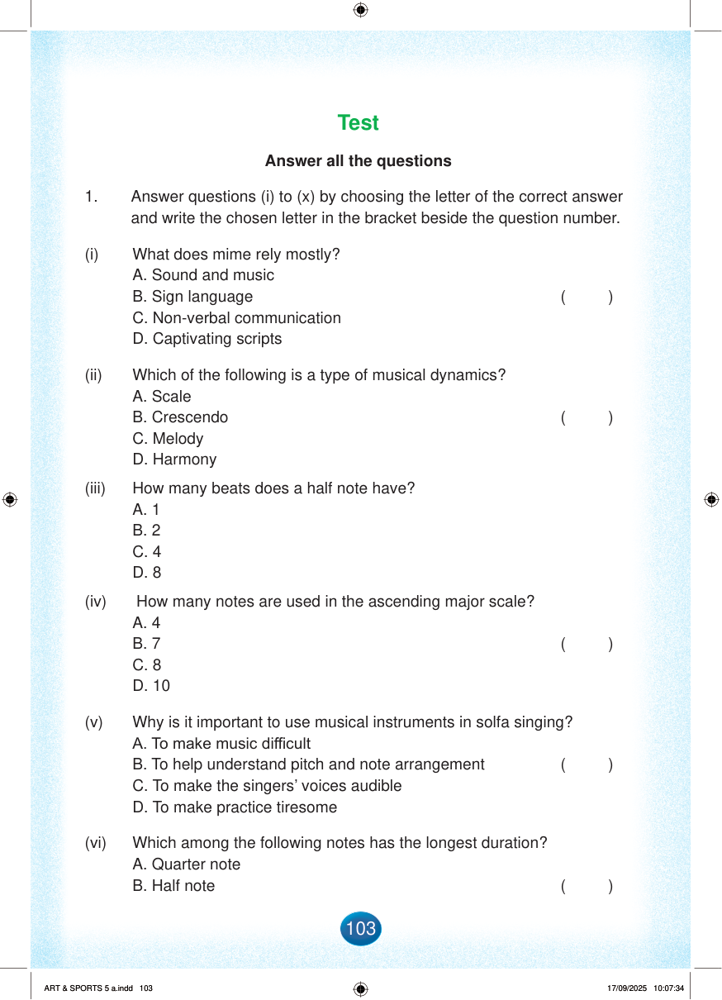

Test
Answer all the questions
1.
Answer questions (i) to (x) by choosing the letter of the correct answer and write the chosen letter in the bracket beside the question number.
(i) What does mime rely mostly?
( )
A. Sound and music
B. Sign language
C. Non-verbal communication
D. Captivating scripts
(ii) Which of the following is a type of musical dynamics?
( )
A. Scale
B. Crescendo
C. Melody
D. Harmony
(iii) How many beats does a half note have?
A. 1
B. 2
C. 4
D. 8
(iv) How many notes are used in the ascending major scale?
( )
A. 4
B. 7
C. 8
D. 10
(v) Why is it important to use musical instruments in solfa singing?
( )
A. To make music difficult
B. To help understand pitch and note arrangement
C. To make the singers’ voices audible
D. To make practice tiresome
(vi) Which among the following notes has the longest duration?
A. Quarter note
B. Half note